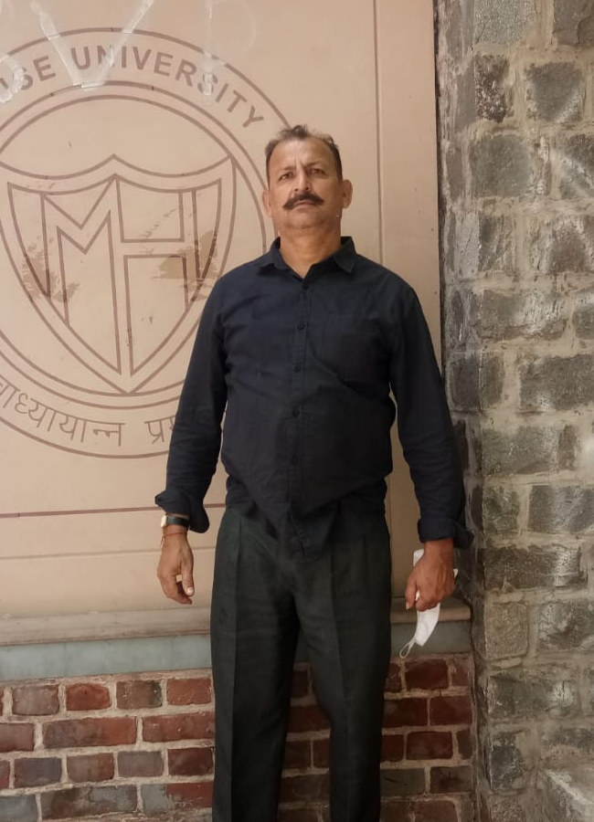

BITU
KUMAR.
Hypersonic Engineering Specialist.
Mission Systems Advisor.
Bridging fundamental physics, advanced computation and complex spacecraft systems—from thermal protection research to planetary exploration architecture.

1997–2025
Georgia Tech
thermal protection
2025–present
Engineering at the
edge of possibility.
A technical profile centered on reliability where physical extremes, computational complexity and mission constraints converge.
Deep science.
Systems perspective.
Six interconnected capability areas, selected for executive clarity rather than an exhaustive keyword inventory.
Hypersonics & TPS
Compressible flow, shock-layer heating, thermal response, material recession and spacecraft heat-shield engineering.
Scientific Modeling
Finite-volume CFD, finite-element analysis, coupled thermal-structural simulation and uncertainty quantification.
Engineering Computing
Performance-oriented numerical software, validated solvers and parallel computing for large aerospace models.
Mission Architecture
Spacecraft subsystems, planetary entry architecture, interface definition and integrated engineering trade studies.
Reliability & Safety
Requirements traceability, design verification, FMEA, fault-tree analysis and risk-informed technical reviews.
Avionics & Estimation
Real-time architectures, state estimation and embedded-system interfaces from a systems-integration perspective.
Mission environments
that define excellence.
The following programs provide context for the technical areas described in the supplied career narrative; no official program endorsement is implied.
Curiosity
Mars atmospheric entry, aeroshell thermal response and structural-integrity analysis within a multidisciplinary EDL environment.
Perseverance
Planetary-entry thermal analysis, design verification, engineering uncertainty and mission reliability.
Orion
Technical study context: ablative heat shields, lunar-return thermal loading and cross-disciplinary systems reviews.
Lunar & Mars
Advanced thermal-control technology, space-system reliability and mission-architecture trade studies.
Research to
technical leadership.
Reverse-chronological summary aligned to the profile's finalized 2025 return to India.
Principal Space Systems Advisor & Research Mentor
Technical advisory and mentoring focus: thermal protection, high-reliability aerospace software, mission assurance and engineering research.
Principal Aerospace Engineer & Mission Systems Technical Director
Multidisciplinary technical reviews, spacecraft thermal reliability, future exploration architecture and risk-informed systems engineering.
Principal Flight Systems Engineer
Mars 2020 engineering-study context, entry-system thermal response, probabilistic risk analysis and design verification.
Senior Flight Systems Architect
Spacecraft architecture, subsystem integration and cross-center technical consultations in re-entry thermal protection.
Lead EDL Thermal Protection & Structures Engineer
Curiosity-era Mars aeroshell modeling, heat-shield response, thermal-structural evaluation and multidisciplinary EDL reviews.
Senior Thermal Systems Engineer
Planetary-entry aeroshell studies and numerical thermal/structural analysis.
Research Aerospace Engineer
Hypersonic material response, thermal-protection analysis, numerical modeling and high-temperature testing support.
Postdoctoral Research Fellow
Computational modeling of thermal protection materials and hypersonic heating.
Built on fundamentals.
Mathematics, physics and aerospace engineering provide the foundation for complex mission-system decisions.
Ph.D. in Aerospace Engineering
Georgia Institute of Technology
Thermal protection and hypersonic computational modeling.
M.S. in Aeronautics & Astronautics
Purdue University
High-temperature gas dynamics and computational fluid physics.
B.Tech. in Aerospace Engineering
Indian Institute of Technology, Kharagpur
Aerodynamics, structures, propulsion and applied mathematics.
Where rigorous thinking meets ambitious engineering.
For research discussions, technical advisory conversations and aerospace systems mentorship.